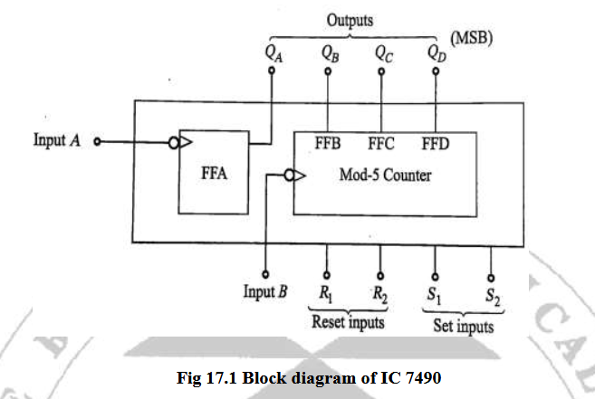
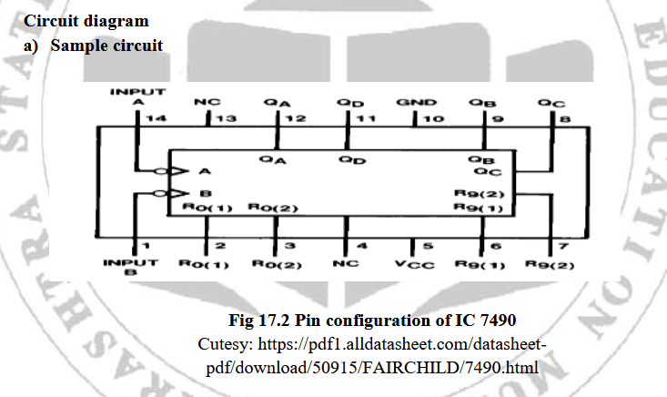
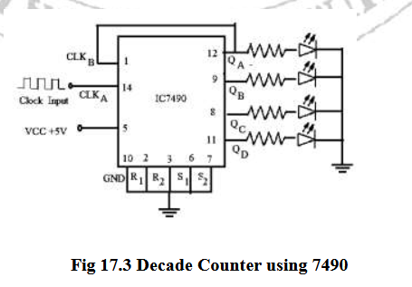

01 / COUNTING CIRCUIT
IC 7490 decade counter
Signal pathClock / control input
Developed by Dept of CSE, SGI
Digital Techniques (313303) • MSBTE K Scheme
| Clock pulses | QD | QC | QB | QA | Decimal equivalent |
|---|
Enter the decimal equivalent for each pulse count. Your answer is checked against the simulator's BCD state.
A counter stores a number as HIGH and LOW output levels. The 7490 has four output bits, named QA, QB, QC and QD. Together they represent a decimal digit from zero through nine.
Decimal = 8QD + 4QC + 2QB + 1QA
The first section divides the input frequency by 2. Connecting QA to Clock B makes the second section divide by 5 too. The combined circuit repeats after 2 × 5 = 10 input pulses.
Each row is the stable BCD output after the indicated number of falling clock edges. The 10th pulse returns the decade counter to 0000.
The 7490 changes state on a HIGH-to-LOW transition (falling edge) at its clock input. In decade mode, Clock A receives the external pulse and QA feeds Clock B. This makes the ÷5 section respond to QA transitions.
A manual “clock pulse” includes a HIGH phase and a falling edge. One complete pulse advances the decade count once.
Both reset-to-zero pins R0(1) and R0(2) must be HIGH together to asynchronously clear outputs to 0000. Both set-to-nine pins R9(1) and R9(2) must be HIGH together to preset outputs to 1001.
Keep asynchronous control inputs LOW during normal counting. Do not activate reset and preset pairs at the same time; that condition is unspecified for this teaching model.



Use the sections below as a guided lab record. Your editable entries stay in this browser on this device.